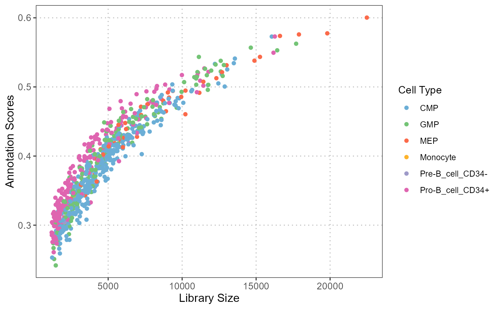

Scatter plot: QC stats vs Cell Type Annotation Scores
Source:R/plotQCvsAnnotation.R
plotQCvsAnnotation.RdCreates a scatter plot to visualize the relationship between QC stats (e.g., library size) and cell type annotation scores for one or more cell types.
Usage
plotQCvsAnnotation(
sce_object,
cell_type_col,
cell_types = NULL,
qc_col,
score_col,
max_cells = 5000
)Arguments
- sce_object
A
SingleCellExperimentcontaining the single-cell expression data and metadata.- cell_type_col
The column name in the
colDataofsce_objectthat contains the cell type labels.- cell_types
A vector of cell type labels to plot (e.g., c("T-cell", "B-cell")). Defaults to
NULL, which will include all the cells.- qc_col
A column name in the
colDataofsce_objectthat contains the QC stats of interest.- score_col
The column name in the
colDataofsce_objectthat contains the cell type annotation scores.- max_cells
Maximum number of cells to retain. If the object has fewer cells, it is returned unchanged. Default is 5000.
Value
A ggplot object displaying a scatter plot of QC stats vs annotation scores, where each point represents a cell, color-coded by its cell type.
Details
This function generates a scatter plot to explore the relationship between various quality control (QC) statistics, such as library size and mitochondrial percentage, and cell type annotation scores. By examining these relationships, users can assess whether specific QC metrics, systematically influence the confidence in cell type annotations, which is essential for ensuring reliable cell type annotation.
Examples
# Load data
data("qc_data")
# Remove cell types with very few cells
qc_data_subset <- qc_data[, !(qc_data$SingleR_annotation
%in% c("Chondrocytes", "DC",
"Neurons","Platelets"))]
p1 <- plotQCvsAnnotation(sce_object = qc_data_subset,
cell_type_col = "SingleR_annotation",
cell_types = NULL,
qc_col = "total",
score_col = "annotation_scores")
p1 + ggplot2::xlab("Library Size")
